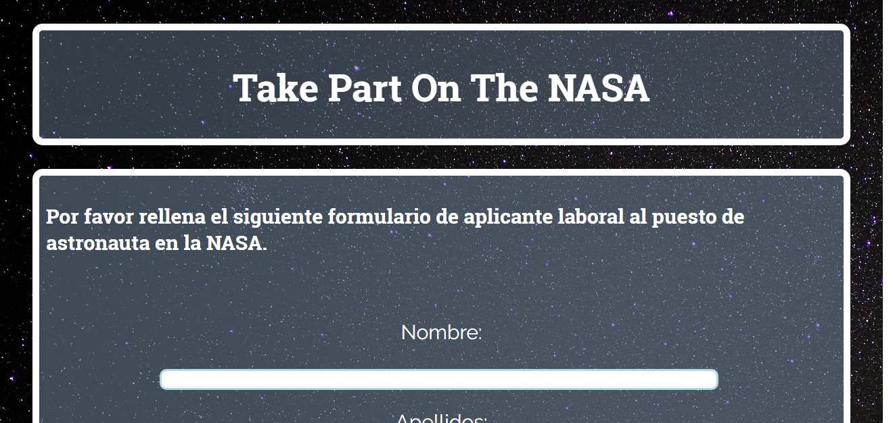
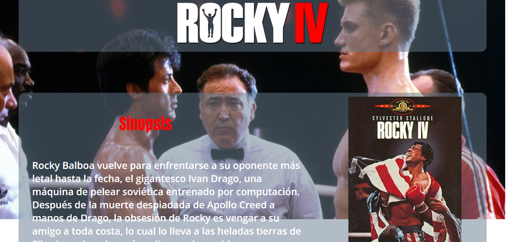
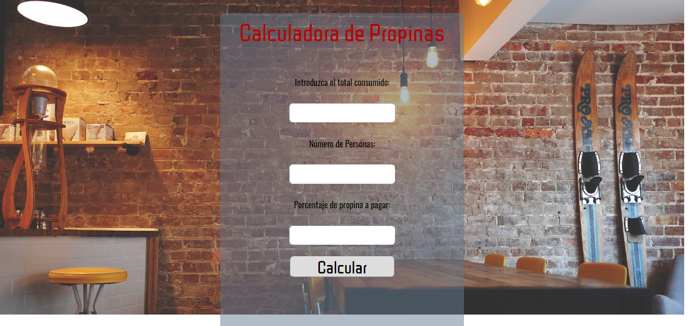
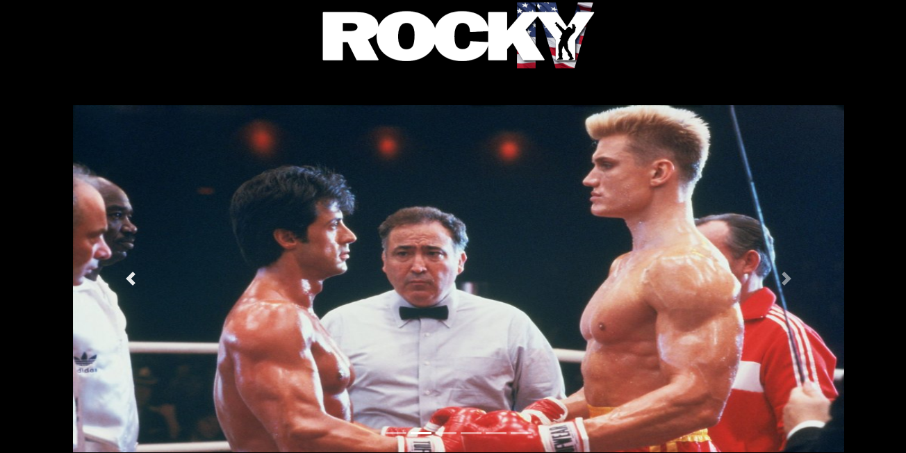
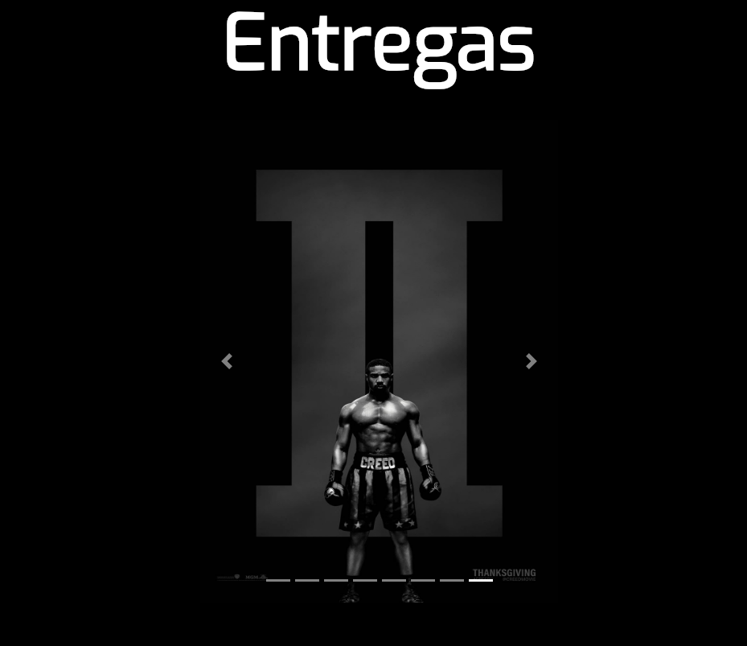
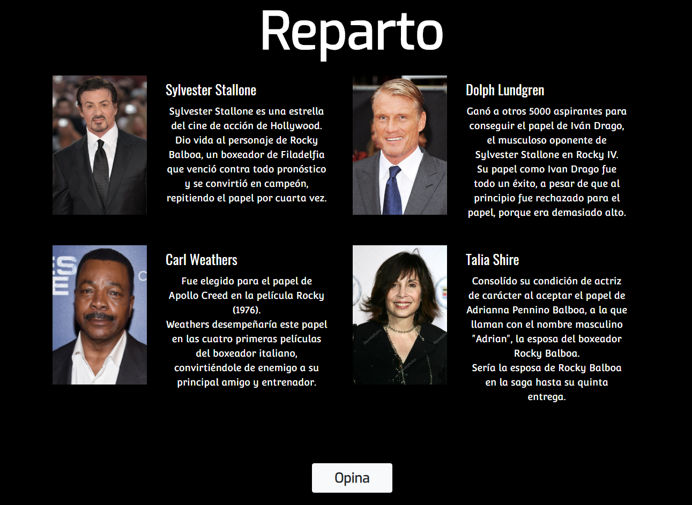
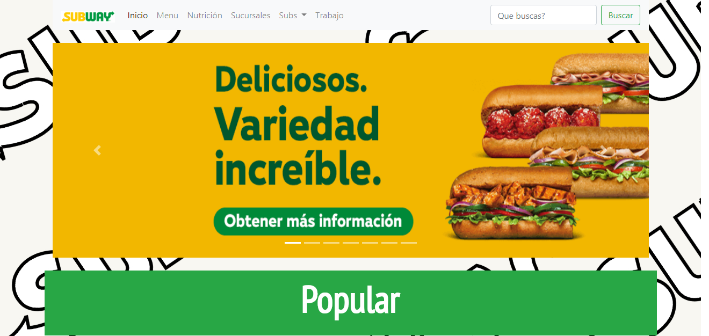
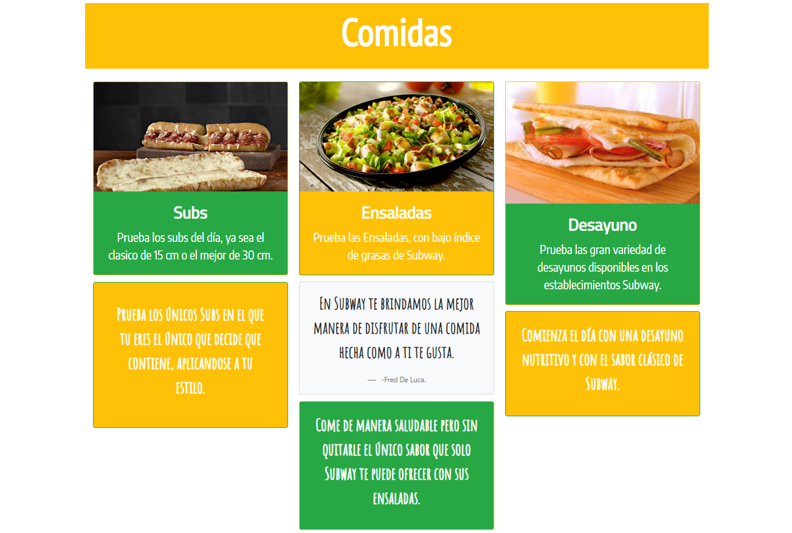
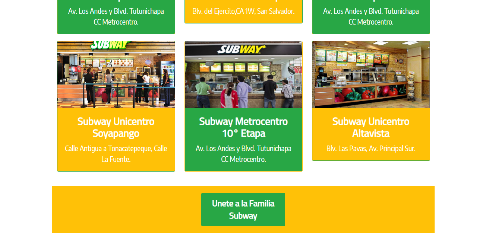

Curriculum Bitlab

Link al repositorio
Formulario NASA
Link al repositorio
Sitio Promocional de Rocky
Link al repositorio
Calculadora de Propinas
Link al repositorio
To-Do-List
Link al repositorio
Segunda versión de sitio promocional de Rocky
  Link al repositorio
Sitio del restaurante Subway
  Link al repositorio